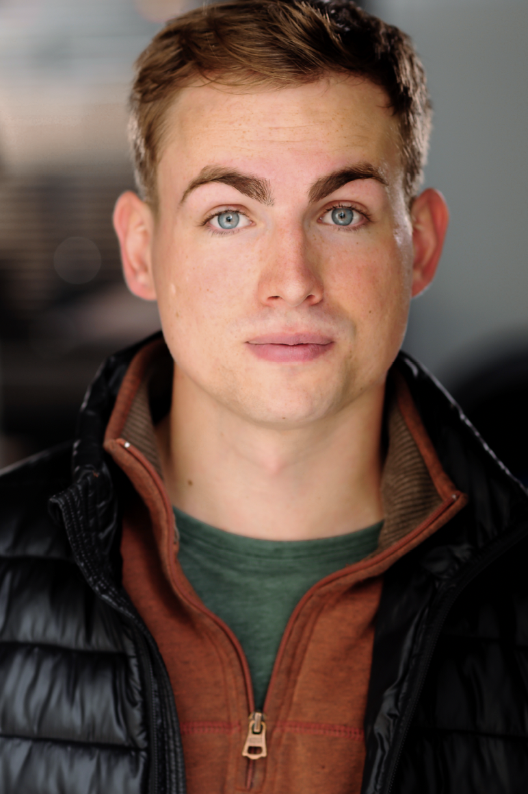
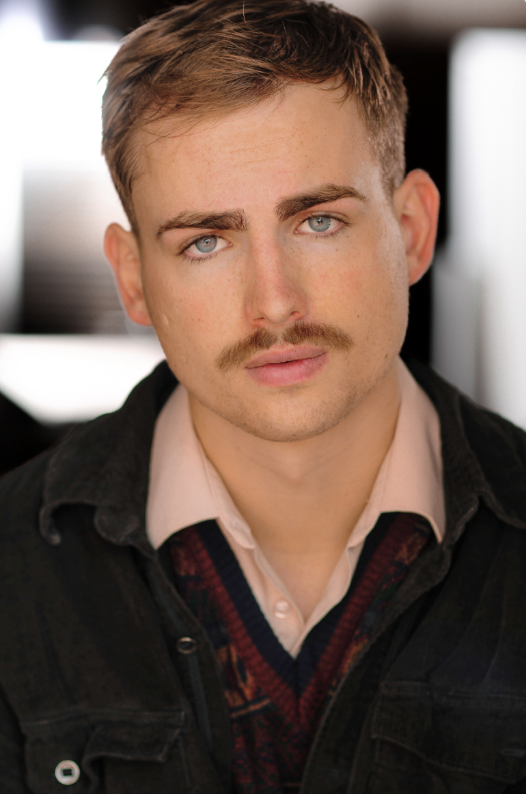
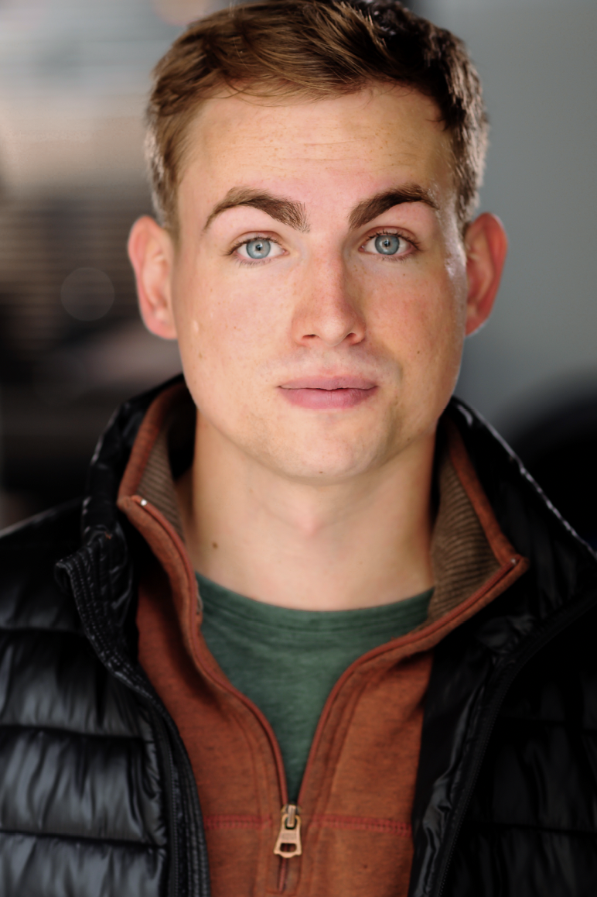
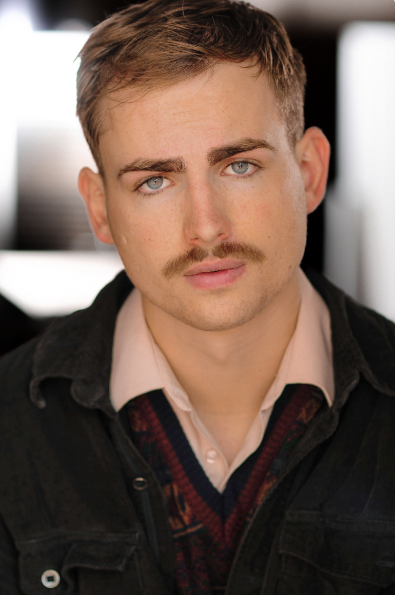

Reels
 



| Killers of the Flower Moon | SAG Feature | Jesse Plemons Stand-In | Martin Scorsese | |
| Will Warner shadowed Jesse Plemons for every day of production, serving as his stand-in for the duration of shooting. This position gave Will experience working on the largest budget set in the world at time of shooting. He made the most of this opportunity by engaging with the script each day, executing precise blocking and studying the processes of the best actors in the world up close. | ||||
| Reagan | SAG Feature | Regular Stand-In | Sean McNamara | |
| In this production, Will stood in for a variety of Male roles, including Reagan, portrayed by Dennis Quaid. Stepping into a wide variety of scenes, characters, and locations provided invaluable experience with camera blocking, standard practices for actor’s on professional set, and flexibility to fill needs at a moment’s notice. | ||||
| SHOWCASE | SAG-Short | Supporting | Collin Colaizzi | |
| In a third production by Collin Colaizzi, Will was tasked with transfixing audiences in the opening moments of the movie. He wrote an original musical theatre ballad, combining his abilities as an actor with his writing and singing expertise. | ||||
| Strangers May Kiss | Feature | Supporting | Colin Colaizzi | |
| In his second film with Colaizzi, Will returns as a college freshman sharing his disillusionment and wisdom with his younger friends, who, following his advice, engage in reckless behavior that destroys their fragile relationships. | ||||
| God Loves Us When We Dance | Short | Supporting | Emma Woodward | |
| Portraying an opportunistic, software student from a prestigious east-coast school, Will excels in this sci-fi romance exploring emerging technologies and their disconnect from real-world consequences. | ||||
| C'mon Cowboy Cry | Short | Lead | Carson Sanders | |
| Will brought to life a young cowboy, struggling with a failing marriage in this drama about two people who fell in love before their time, and now seek to extricate themselves from one another. His performance alongside Cinematography by Grayson Harjo, tells a heartfelt Oklahoma tale about young marriages, grief, and recuperation. | ||||
| Off The Face of the Earth | Short | Lead | Alejandro Padilla | |
| Playing a young man trying to convince his sister to return home she ran away years earlier, Will plays across from Avery Baker in this heartfelt story about a broken family. | ||||
| Jumping Off Point | Short | Lead | Andrew Olsen | |
| This modern parable challenged Will with the portrayal of a young but recovering alcoholic working to regain himself and his life when confronted with the shock of a baby on the way. | ||||
| McDonald's Man | Short | Lead | Collin Colaizzi | |
| In his first film with director Collin Colaizzi, Will plays the titular antagonist in this high school comedy about a bully who challenges his victim to an eating competition. | ||||
Theater
| Burnt Toast Sketch Show | Performer/Writer | Frigid NY | Emma Woodward & Sarah Santamaria | |
| As a founding member of the Burnt Toast Company, will built upon earlier comedy experience and takes to the stage every other month in New York with a completely original show that has thrilled sold-out crowds since its creation in 2023. More recently, the show has shifted into digital spaces as well on YouTube, Instagram, and TikTok. | ||||
| A Midsummer Night's Dream | Theseus | Weitzenhoffer Theatre | Judith Pender | |
| In Shakespeare’s classic comedy. Will set the lovers out on their journey and brings them back to Athens. Embodying this character involved presence, leadership, and a command of heightened language to clearly convey the comedic themes of the show. | ||||
| The Trial | Dr. Grace | Gilson Lab Theatre | Joe Alberti | |
| This character, based on Dr. Huld in Kafka’s original novel, was the culmination of a year-long writing process where Will worked alongside translator, Bob Lemon, and Head Writer/Director, Joe Alberti. The character provided the much needed comedic relief in an otherwise dark and twisted examination of the bureaucratic systems that confine and subdue modern man. | ||||
| Scapino! | Waiter - Swing: Ottavio & Sylvestro | Gilson Lab Theatre | Judith Pender | |
| In Frank Dunlop’s adaptation, Will explored Commedia Dell'arte and clowning work to portray a waiter and both of the young lovers who he understudied. This work led him to discover a love for bold character creation that extends into his current comedic work. | ||||
| Blood Wedding | Young Man - Swing: The Groom, Leonardo | Weitzenhoffer Theatre | Sara Guerrero | |
| In this adaptation with original music accompanying Lorca’s poems, Will led the tenor section and served as a swing for the two leading male parts. He also served as the fight captain, maintaining the integrity and safety of the stage combat and running fight calls before performances. | ||||
| A Christmas Carol | Ensemble - Understudy | Brackett Stage | Tom Orr | |
| Will memorized the tracks of 9 male characters in the play, prepared alongside his own ensemble work, to step in at any time to cover each track. | ||||
| 30 Second Plays Sketch Comedy | Performer/Writer | OU Studio 317 | Sarah Santamaria | |
| In his first foray into sketch writing, Will joined the group as a writer and performer, his sketches focused on character-based comedy and examinations of popular culture. | ||||
| The Boy and the Bear | Boy | Gilson Lab Theatre - Virtual | Michael Darmon | |
| Performing during Covid led to a unique theatre experience as Will navigated the unexpected constraints of a global pandemic. The heartfelt show provided a bright spot in a dark time. | ||||
Training
| BFA: Drama | University of Oklahoma | Emphasis in Acting & Dramaturgy - Minor in English Writing | |
|
Coursework:
|
|||
| Dramatic Improv | David Garelik | Brooklyn, NY | |
Skills
| Dialects | Texas - Southern - Irish - Scottish - New York - Boston - RP - Cockney |
| Special Skills | Driver's License - Improv - Singing - Guitar - Bouldering - Basic Tumbling - Lacrosse - Competitive Swimming - Spanish (Conversational) |
| Fight/Weapons | Wrestling (6 years) - Firearms Experience - Historical Fencing (HEMA) |
| Dance | Ballroom, Swing, Period Dance, Basic Ballet, Basic Modern |
Contact
Contact Will today to discuss how his skills and services can bring your creative vision to life.